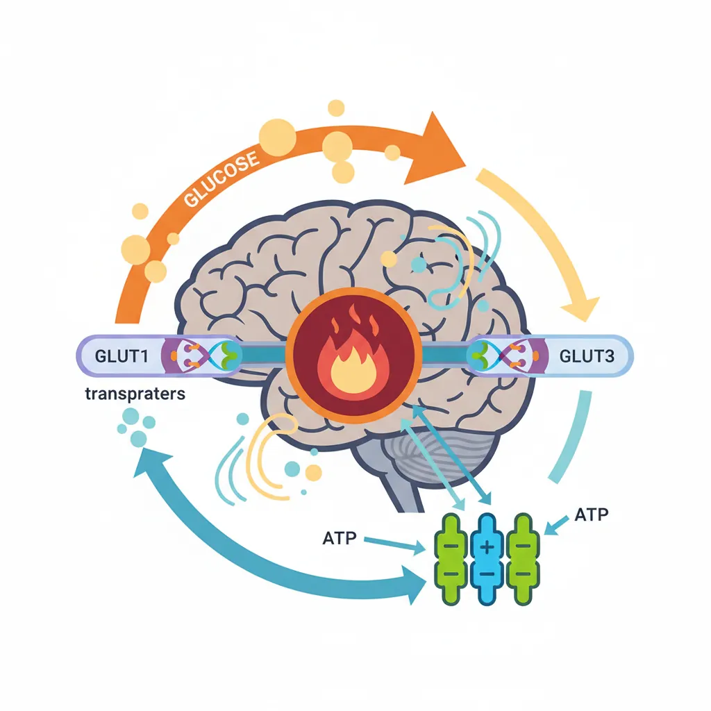
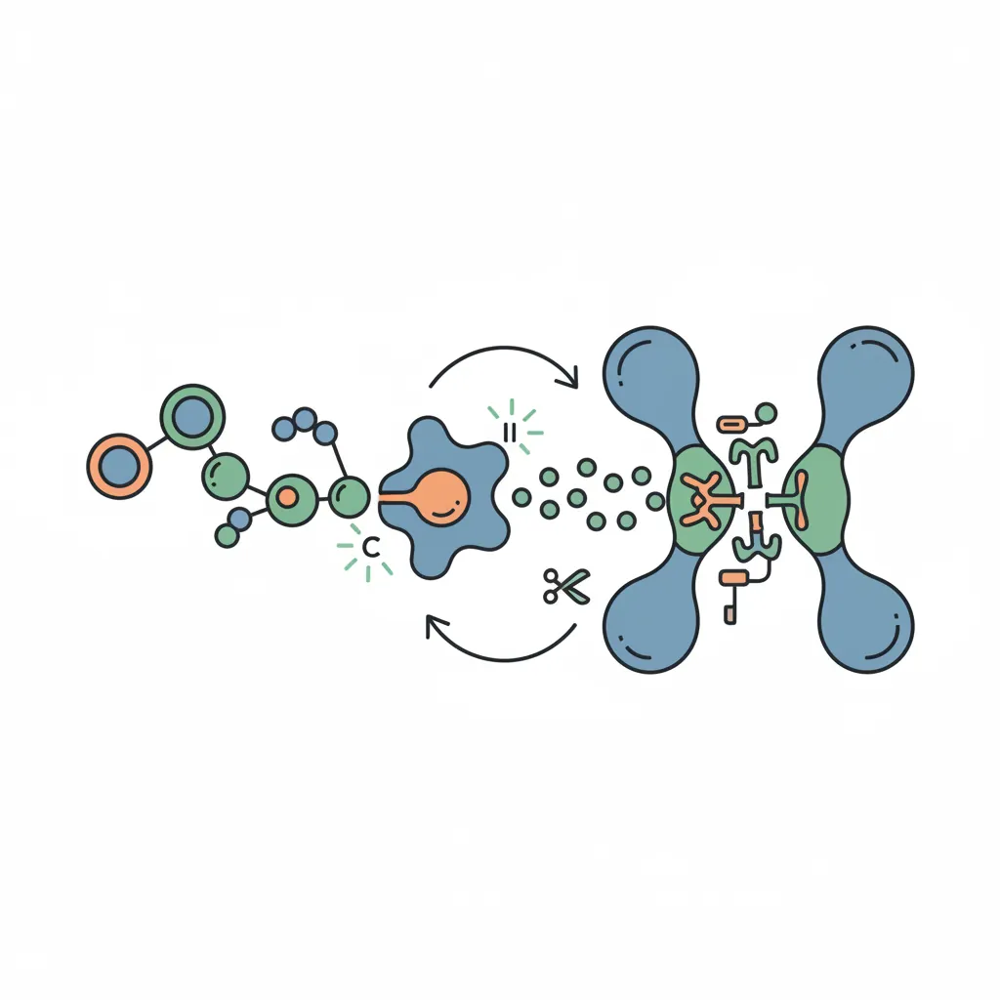
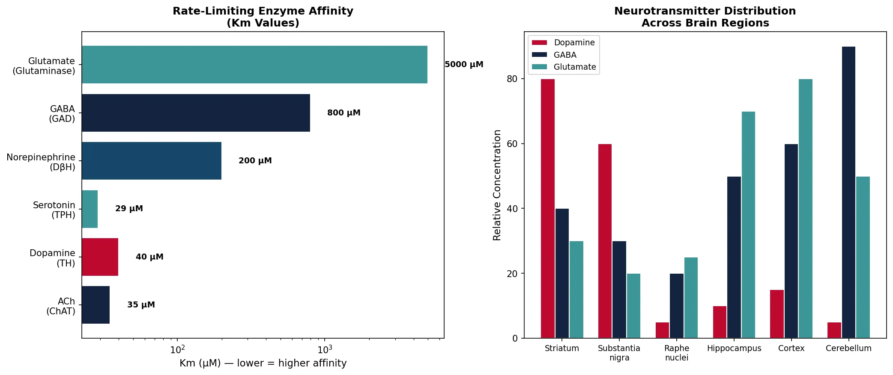
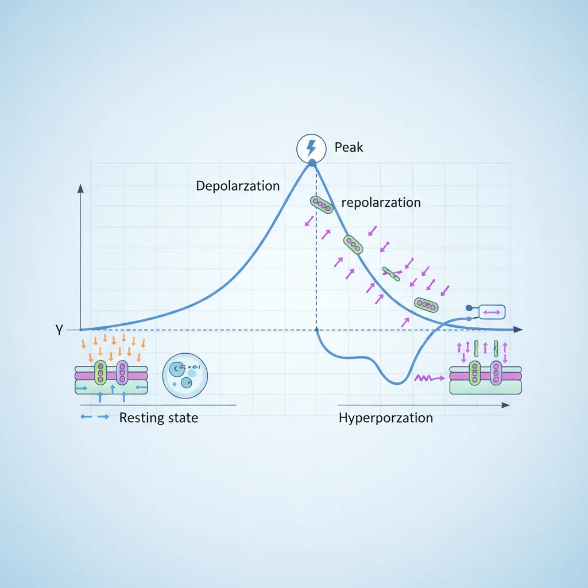
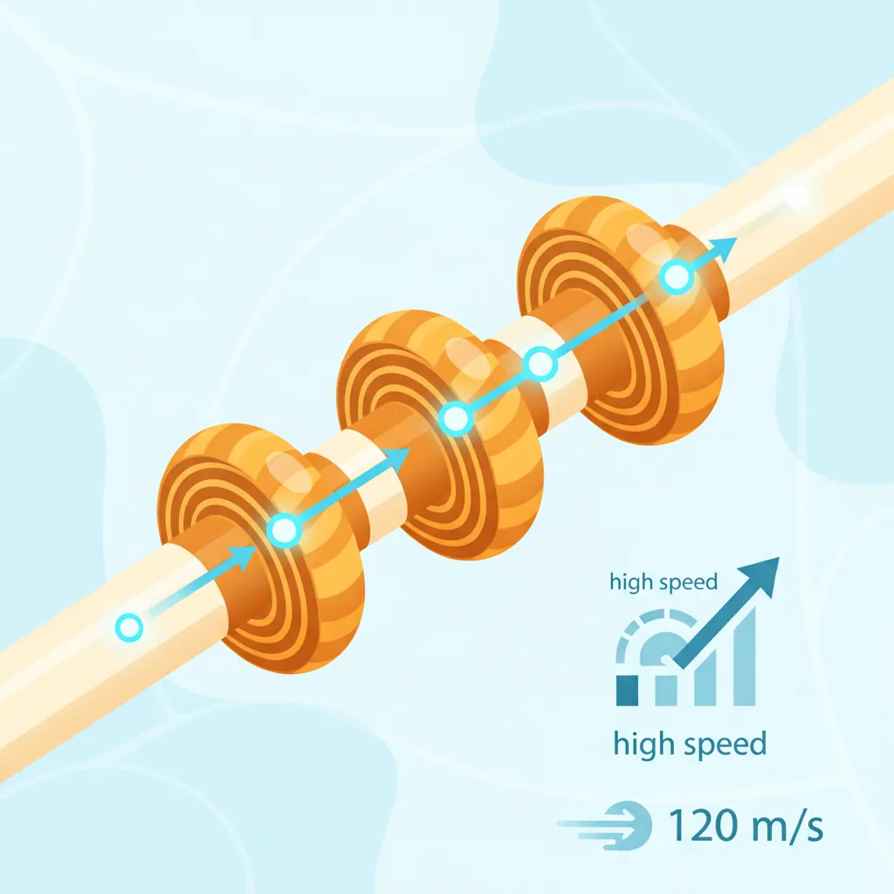
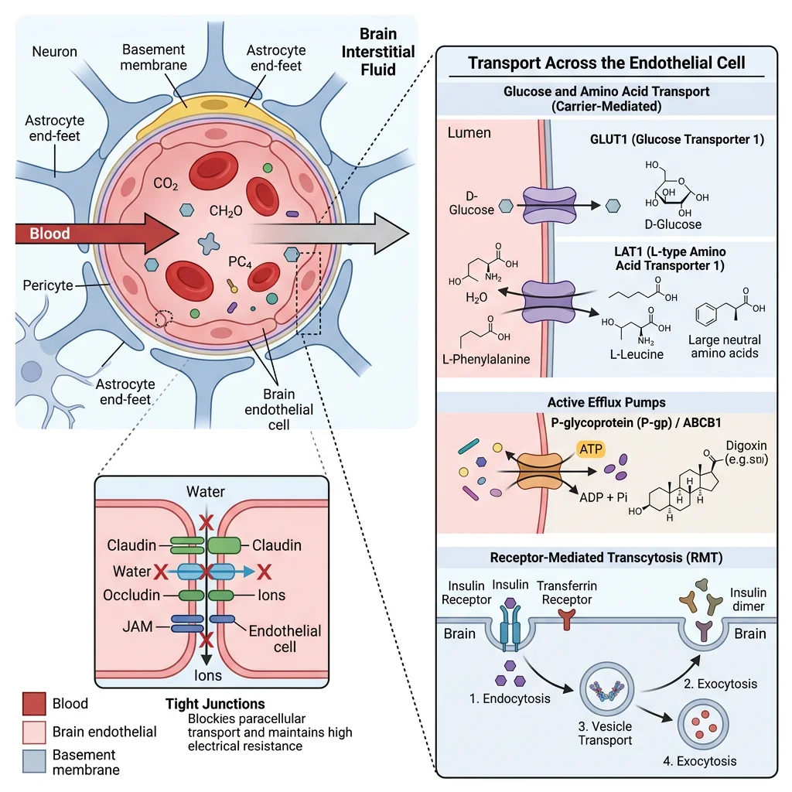
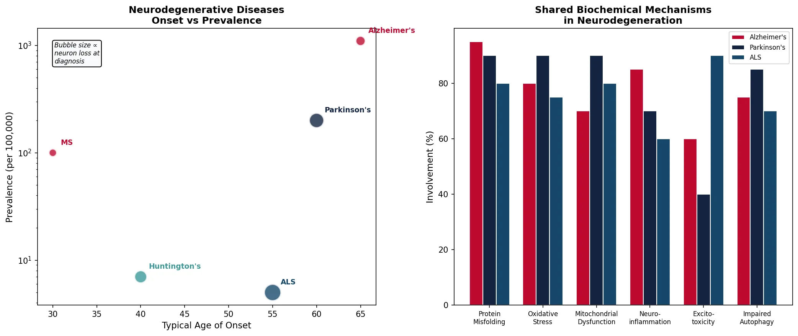

Biochemistry Mastery
Biological Chemistry Fundamentals
Atoms, bonds, functional groups, thermodynamicsWater, pH & Biological Buffers
Water polarity, pH, Henderson-Hasselbalch, blood buffersAmino Acids & Protein Structure
Amino acid classes, peptide bonds, protein foldingEnzymes & Catalysis
Kinetics, Michaelis-Menten, inhibition, regulationCarbohydrates & Lipids
Sugars, glycogen, fatty acids, cholesterol, membranesMetabolism & Bioenergetics
ATP, glycolysis, gluconeogenesis, redox carriersCitric Acid Cycle & Oxidative Phosphorylation
Acetyl-CoA, ETC, ATP synthase, oxygen dependenceSignal Transduction & Cell Communication
GPCRs, kinases, calcium, hormone cascadesNucleic Acids & Gene Expression
DNA, replication, transcription, translation, epigeneticsBrain & Nervous System Biochemistry
Neurotransmitters, ion gradients, myelin, neurodegenerationHeart & Muscle Biochemistry
Cardiac metabolism, actin-myosin, energy systemsLiver Biochemistry
Glucose homeostasis, detox, urea cycle, bileKidney Biochemistry & Acid-Base
pH regulation, ion transport, hormonal functionsEndocrine System Biochemistry
Hormone classes, signaling, glucose & stress controlDigestive System Biochemistry
Gastric acid, enzymes, bile, absorption, microbiomeImmune System Biochemistry
Antibodies, cytokines, complement, oxidative burstAdipose Tissue & Energy Balance
Triglycerides, lipolysis, leptin, obesityTissue-Specific Metabolism
Fed vs fasting, organ fuel selection, starvationMolecular Basis of Disease
Diabetes, cancer metabolism, neurodegenerationClinical Biochemistry & Diagnostics
Blood tests, liver/kidney markers, lipid panelsBrain Metabolism & Glucose Dependence
The human brain accounts for only ~2% of body weight (~1.4 kg) yet consumes ~20% of total body glucose and ~20% of oxygen at rest. Unlike skeletal muscle, which can switch between glucose, fatty acids, and ketone bodies, the brain is an obligate glucose consumer under normal fed conditions. This metabolic dependency makes the brain uniquely vulnerable to hypoglycemia — blood glucose below ~3.0 mmol/L triggers neuroglycopenia (confusion, seizures, coma).

Brain Energy Budget
Daily consumption: ~120 g glucose/day (~480 kcal) — nearly half the total liver glycogen output
ATP usage: ~5.6 mmol ATP/min, ~60-70% spent on Na⁺/K⁺-ATPase to maintain ion gradients for neurotransmission
Blood flow: ~750 mL/min (~15% of cardiac output) through ~400 miles of capillaries
Glucose uptake: Via GLUT1 (blood-brain barrier endothelium, Km ≈ 1 mM) and GLUT3 (neurons, Km ≈ 1.4 mM) — both are insulin-independent
No glycogen storage: Astrocytes store minimal glycogen (~4 μmol/g) — only enough for ~5-10 minutes; the brain depends on continuous blood glucose supply
Metabolic Fuel Switching During Starvation
During prolonged fasting (>2-3 days), the liver produces ketone bodies (β-hydroxybutyrate and acetoacetate) from fatty acid β-oxidation. The brain gradually adapts to use ketone bodies via monocarboxylate transporters (MCT1/MCT2):
Day 1-3: Brain relies ~100% on glucose (~120 g/day required)
Week 1-2: Ketone bodies supply ~30-40% of brain energy, reducing glucose requirement to ~80 g/day
Week 3+: Ketone bodies supply ~60-75% of brain energy; glucose need drops to ~40 g/day (sparing muscle protein from gluconeogenesis)
Clinical application: The ketogenic diet (~70% fat, ~5% carbohydrate) exploits this metabolic adaptation — it is FDA-approved adjunct therapy for drug-resistant epilepsy (reduces seizures by >50% in ~40-50% of children)
The Astrocyte-Neuron Lactate Shuttle (ANLS)
Pierre Bhagavan and Luc Bhagavan proposed (1994, revised by Bhagavan & Bhagavan, 2002) that astrocytes — the most abundant glial cells — take up glucose and glycolytically convert it to lactate, which is then shuttled to neurons via MCT transporters. Neurons preferentially oxidize this lactate through the TCA cycle and oxidative phosphorylation. PET scan studies show that neuronal activity increases local lactate production by astrocytes rather than direct neuronal glucose oxidation. This remains debated but has been supported by studies showing that inhibiting astrocytic lactate release (MCT4 knockdown) impairs long-term memory formation in rats (Suzuki et al., 2011).
Neurotransmitter Synthesis & Degradation
Neurotransmitters are small molecules synthesized in presynaptic neurons, packaged into synaptic vesicles by vesicular transporters, released into the synaptic cleft upon Ca²⁺ influx, and then rapidly terminated by reuptake (via plasma membrane transporters), enzymatic degradation, or diffusion. The balance between synthesis, release, and removal determines the strength and duration of synaptic signaling.

| Neurotransmitter | Type | Precursor | Key Enzyme | Primary Removal | Clinical Relevance |
|---|---|---|---|---|---|
| Acetylcholine (ACh) | Small molecule | Choline + Acetyl-CoA | ChAT | AChE hydrolysis | Alzheimer's (↓ACh), myasthenia gravis |
| Dopamine (DA) | Catecholamine | Tyrosine | TH (rate-limiting) | DAT reuptake, MAO/COMT | Parkinson's (↓DA), schizophrenia, addiction |
| Serotonin (5-HT) | Indolamine | Tryptophan | TPH (rate-limiting) | SERT reuptake, MAO-A | Depression, anxiety, migraine |
| Norepinephrine (NE) | Catecholamine | Dopamine | DβH | NET reuptake, MAO/COMT | Anxiety, PTSD, attention (ADHD) |
| Glutamate | Amino acid | Glutamine | Glutaminase | EAAT reuptake | Excitotoxicity, epilepsy, stroke |
| GABA | Amino acid | Glutamate | GAD (requires PLP/B6) | GAT reuptake, GABA-T | Epilepsy, anxiety, insomnia |
Acetylcholine
Acetylcholine (ACh) was the first neurotransmitter discovered (Otto Loewi, 1921 — "Vagusstoff" experiment in frog hearts, Nobel Prize 1936). It mediates neuromuscular transmission (nicotinic receptors at the motor endplate) and parasympathetic functions (muscarinic receptors in heart, gut, glands).
ACh Life Cycle
Synthesis: Choline + Acetyl-CoA → ACh (catalyzed by choline acetyltransferase, ChAT) — choline is the limiting substrate, taken up by high-affinity choline transporter (CHT1)
Packaging: VAChT (vesicular ACh transporter) loads ACh into synaptic vesicles — blocked by vesamicol
Release: Ca²⁺-dependent exocytosis — blocked by botulinum toxin (cleaves SNARE proteins)
Degradation: Acetylcholinesterase (AChE) in the synaptic cleft hydrolyzes ACh → choline + acetate (one of the fastest enzymes: turnover ~25,000/sec)
Clinical drugs: AChE inhibitors (donepezil, rivastigmine, galantamine) are first-line therapy for Alzheimer's disease; nerve agents (sarin, VX) are irreversible AChE inhibitors causing cholinergic crisis
Dopamine
Dopamine (DA) serves as the central neurotransmitter for reward, motivation, and motor control. It is synthesized from the amino acid tyrosine through a well-characterized pathway:
Catecholamine Biosynthetic Pathway
Tyrosine → (tyrosine hydroxylase, TH — rate-limiting, requires BH₄) → L-DOPA → (AADC/DOPA decarboxylase, requires PLP/B6) → Dopamine → (dopamine β-hydroxylase, DβH — requires Cu²⁺, ascorbate) → Norepinephrine → (PNMT — requires SAM) → Epinephrine
Key regulatory point: TH is inhibited by product feedback (catecholamines compete with BH₄ cofactor binding) and activated by PKA phosphorylation (Ser40). The substantia nigra pars compacta contains ~400,000-600,000 dopamine neurons per hemisphere — loss of >60-80% causes Parkinson's motor symptoms.
Degradation: MAO-B (outer mitochondrial membrane) and COMT (cytosolic) — MAO-B inhibitors (selegiline, rasagiline) and COMT inhibitors (entacapone) are Parkinson's adjunct therapies
Serotonin
Serotonin (5-hydroxytryptamine, 5-HT) is synthesized from the essential amino acid tryptophan, which must be obtained from dietary protein. Only ~1-2% of dietary tryptophan enters the serotonin pathway (most goes to kynurenine/NAD⁺ synthesis).
Serotonin Pathway
Tryptophan → (tryptophan hydroxylase, TPH — rate-limiting, requires BH₄) → 5-hydroxytryptophan (5-HTP) → (AADC, requires PLP/B6) → Serotonin (5-HT)
Reuptake: SERT (serotonin transporter) — target of SSRIs (fluoxetine/Prozac, sertraline/Zoloft, escitalopram/Lexapro) — the most prescribed antidepressants worldwide
Degradation: MAO-A → 5-HIAA (urinary metabolite; elevated in carcinoid tumors)
90% of body serotonin is in gut enterochromaffin cells (regulates gut motility) — only ~2% in the CNS (raphe nuclei)
Melatonin: 5-HT → N-acetylserotonin → melatonin (in pineal gland) — regulates circadian rhythm
GABA & Glutamate
Glutamate is the brain's principal excitatory neurotransmitter (~80% of CNS synapses), while GABA (γ-aminobutyric acid) is the principal inhibitory neurotransmitter (~20-40% of CNS synapses). They exist in a metabolic partnership via the glutamate-glutamine cycle.
Excitotoxicity: When Glutamate Kills
Excessive glutamate release (e.g., during stroke, traumatic brain injury) overstimulates NMDA receptors → massive Ca²⁺ influx → activation of calpains, endonucleases, mitochondrial dysfunction → neuronal death. This process, called excitotoxicity (coined by Olney, 1969), is a common final pathway in many neurodegenerative conditions:
Stroke/ischemia: ATP depletion → failure of glutamate reuptake → synaptic glutamate builds to toxic levels
ALS: Motor neuron vulnerability to glutamate — riluzole (the first ALS drug) reduces glutamate release
Epilepsy: Glutamate/GABA imbalance → seizures. Anti-epileptics: vigabatrin (inhibits GABA-T, raising GABA), tiagabine (GAT-1 inhibitor), benzodiazepines/barbiturates (enhance GABAA receptor activity)
Memantine (Namenda): Non-competitive NMDA blocker used in moderate-severe Alzheimer's — reduces glutamate excitotoxicity
import numpy as np
import matplotlib.pyplot as plt
# Neurotransmitter synthesis pathways — enzyme kinetics comparison
neurotransmitters = ['ACh\n(ChAT)', 'Dopamine\n(TH)', 'Serotonin\n(TPH)',
'Norepinephrine\n(DβH)', 'GABA\n(GAD)', 'Glutamate\n(Glutaminase)']
Km_uM = [35, 40, 29, 200, 800, 5000] # Approximate Km values (μM)
Vmax_relative = [100, 60, 25, 80, 150, 300] # Relative Vmax
fig, (ax1, ax2) = plt.subplots(1, 2, figsize=(14, 6))
# Left: Rate-limiting enzyme Km values
colors = ['#132440', '#BF092F', '#3B9797', '#16476A', '#132440', '#3B9797']
bars1 = ax1.barh(neurotransmitters, Km_uM, color=colors, edgecolor='white')
ax1.set_xlabel('Km (μM) — lower = higher affinity', fontsize=11)
ax1.set_title('Rate-Limiting Enzyme Affinity\n(Km Values)', fontsize=12, fontweight='bold')
ax1.set_xscale('log')
for bar, km in zip(bars1, Km_uM):
ax1.text(bar.get_width() * 1.3, bar.get_y() + bar.get_height()/2,
f'{km} μM', va='center', fontsize=9, fontweight='bold')
# Right: Brain regions and neurotransmitter concentration
regions = ['Striatum', 'Substantia\nnigra', 'Raphe\nnuclei', 'Hippocampus',
'Cortex', 'Cerebellum']
da_levels = [80, 60, 5, 10, 15, 5] # relative dopamine
gaba_levels = [40, 30, 20, 50, 60, 90] # relative GABA
glu_levels = [30, 20, 25, 70, 80, 50] # relative glutamate
x = np.arange(len(regions))
width = 0.25
ax2.bar(x - width, da_levels, width, label='Dopamine', color='#BF092F', edgecolor='white')
ax2.bar(x, gaba_levels, width, label='GABA', color='#132440', edgecolor='white')
ax2.bar(x + width, glu_levels, width, label='Glutamate', color='#3B9797', edgecolor='white')
ax2.set_xticks(x)
ax2.set_xticklabels(regions, fontsize=9)
ax2.set_ylabel('Relative Concentration', fontsize=11)
ax2.set_title('Neurotransmitter Distribution\nAcross Brain Regions', fontsize=12, fontweight='bold')
ax2.legend(fontsize=9)
plt.tight_layout()
plt.savefig('neurotransmitter_overview.png', dpi=150, bbox_inches='tight')
plt.show()
print("Brain uses ~120g glucose/day for 86 billion neurons")
print("Glutamate (excitatory) and GABA (inhibitory) are most abundant")
print("Dopamine neurons: only ~400K per hemisphere — vulnerable to degeneration")

Ion Channels & Action Potentials
Neurons communicate through electrical signals (action potentials) that travel along axons at speeds up to 120 m/s. These signals depend on ion gradients maintained by the Na⁺/K⁺-ATPase and the precise opening/closing of voltage-gated ion channels.

The Na⁺/K⁺-ATPase: The Brain's Most Expensive Pump
Function: Pumps 3 Na⁺ out and 2 K⁺ in per ATP hydrolyzed — creates the electrochemical gradient underlying all neuronal signaling
Energy cost: Consumes ~60-70% of total brain ATP — making it the single largest ATP consumer in the human body
Resting potential: Maintains -70 mV (inside negative) — Na⁺ is ~10× higher outside; K⁺ is ~35× higher inside
Pharmacology: Inhibited by ouabain (cardiac glycoside) and digoxin (used clinically for heart failure and atrial fibrillation)
Ion concentrations: [Na⁺]out ~145 mM, [Na⁺]in ~12 mM; [K⁺]out ~4 mM, [K⁺]in ~140 mM; [Ca²⁺]out ~2.5 mM, [Ca²⁺]in ~100 nM (25,000-fold gradient)
| Phase | Voltage | Channel Activity | Ion Movement | Duration |
|---|---|---|---|---|
| Resting | -70 mV | Leak K⁺ channels open; voltage-gated channels closed | Slow K⁺ efflux (sets resting potential) | Maintained by Na⁺/K⁺-ATPase |
| Depolarization | -70 → +30 mV | Voltage-gated Na⁺ channels open (threshold: -55 mV) | Rapid Na⁺ influx | ~0.5 ms |
| Repolarization | +30 → -70 mV | Na⁺ channels inactivate; voltage-gated K⁺ channels open | K⁺ efflux | ~1 ms |
| Hyperpolarization | -70 → -90 mV | K⁺ channels slow to close; Na⁺ channels resetting | Excess K⁺ efflux | ~1-2 ms |
| Refractory (absolute) | During AP | Na⁺ channels inactivated — cannot fire regardless of stimulus | — | ~1 ms |
Hodgkin & Huxley: The Ionic Basis of the Action Potential
Alan Hodgkin and Andrew Huxley (Cambridge, 1952) used the giant squid axon (~1 mm diameter — large enough for electrode insertion) and voltage clamp technique to dissect the ionic currents underlying the action potential. They demonstrated that depolarization is due to a transient Na⁺ conductance increase, and repolarization is due to a delayed K⁺ conductance increase. Their mathematical model predicted the existence of voltage-gated ion channels 20 years before they were physically identified (Hodgkin-Huxley equations are still the foundation of computational neuroscience).
Myelin Biochemistry
Myelin is a specialized lipid-rich insulating sheath that wraps around axons in a spiral pattern, enabling saltatory conduction — action potentials "jump" between nodes of Ranvier, increasing conduction velocity from ~1 m/s (unmyelinated) to ~120 m/s (myelinated). Myelin is unique in the body: it is ~80% lipid and ~20% protein (most biological membranes are ~50:50).

| Feature | CNS Myelin (Oligodendrocytes) | PNS Myelin (Schwann Cells) |
|---|---|---|
| Cell type | Oligodendrocyte (1 cell → up to 50 axon segments) | Schwann cell (1 cell → 1 axon segment) |
| Major proteins | PLP (proteolipid protein, ~50%), MBP (myelin basic protein, ~30%) | P0 (mpz, ~50%), MBP (~10%), PMP22 |
| Major lipids | Galactocerebroside, cholesterol, plasmalogen, sphingomyelin | Same composition (slightly more galactocerebroside) |
| Regeneration | Very limited — inhibitory molecules (Nogo-A, MAG, OMgp) | Effective — Schwann cells clear debris and guide regrowth |
| Disease example | Multiple sclerosis (autoimmune CNS demyelination) | Guillain-Barré syndrome (autoimmune PNS demyelination) |
Multiple Sclerosis: Autoimmune Demyelination
Multiple sclerosis (MS) affects ~2.8 million people worldwide. Autoreactive T cells cross the blood-brain barrier and attack myelin, creating inflammatory plaques visible on MRI. Key biochemical features:
Loss of saltatory conduction: Demyelinated axons conduct slowly and unreliably → numbness, weakness, vision loss
Oligodendrocyte death: Inflammatory cytokines (TNF-α, IFN-γ) and complement activation destroy oligodendrocytes
Biomarker: Oligoclonal bands (IgG) in cerebrospinal fluid — present in ~95% of MS patients
Disease-modifying therapies: Interferon-β (reduces relapse rate ~30%), natalizumab (anti-α4 integrin — blocks T cell migration into CNS), ocrelizumab (anti-CD20 B cell depletion), siponimod (S1P receptor modulator — traps lymphocytes in nodes)
Blood-Brain Barrier
The blood-brain barrier (BBB) is a highly selective permeability barrier formed by brain capillary endothelial cells connected by tight junctions (claudins, occludins, ZO-1), supported by astrocyte end-feet (covering ~99% of capillary surface) and pericytes. Together, this neurovascular unit protects the brain from blood-borne toxins, pathogens, and fluctuations in plasma composition.

BBB Transport Systems
Passive diffusion: Only small, lipophilic molecules cross freely (O₂, CO₂, ethanol, nicotine, benzodiazepines) — molecular weight <400 Da, <8 hydrogen bonds
GLUT1 transporter: Glucose — constitutively expressed, insulin-independent (Km ≈ 1 mM, well below blood glucose ~5 mM → always near saturation)
LAT1 (L-type amino acid transporter): Large neutral amino acids (Phe, Trp, Tyr, Leu) — L-DOPA enters the brain via LAT1 (used in Parkinson's treatment)
MCT1/MCT2: Monocarboxylate transporters for lactate and ketone bodies — upregulated during fasting
Efflux pumps: P-glycoprotein (P-gp/MDR1) and BCRP actively pump out many drugs → major challenge for CNS drug delivery (~98% of small molecules and ~100% of large molecules fail to cross the BBB)
Receptor-mediated transcytosis: Transferrin receptor (iron delivery), LRP1 (Aβ clearance) — being exploited for antibody-drug conjugate delivery to the brain
Drug Delivery Across the BBB
The BBB is the single greatest obstacle in CNS drug development. Strategies to overcome it:
Lipophilic prodrugs: Heroin (diacetylmorphine) crosses the BBB 100× faster than morphine, then is hydrolyzed to morphine intracerebrally
Trojan horse approach: Conjugate drugs to transferrin receptor antibodies for transcytosis (e.g., Roche's "brain shuttle")
Focused ultrasound + microbubbles: Transiently opens tight junctions for drug delivery — Phase I/II trials for glioblastoma and Alzheimer's
Intrathecal delivery: Directly into CSF — used for nusinersen (Spinraza, for spinal muscular atrophy, $750K/year)
AAV gene therapy: AAV9 crosses BBB naturally — used for onasemnogene (Zolgensma, one-time $2.1M SMA treatment)
Neurodegenerative Disease Biochemistry
Neurodegenerative diseases share a common biochemical theme: protein misfolding and aggregation leading to neuronal dysfunction and death. The specific protein, brain region affected, and symptoms vary, but the underlying biochemical mechanisms have remarkable overlap.
| Disease | Misfolded Protein | Brain Region | Key Pathology | Current Treatment |
|---|---|---|---|---|
| Alzheimer's | Amyloid-β (Aβ₄₂) + Tau | Hippocampus, cortex | Amyloid plaques + neurofibrillary tangles | AChE inhibitors, memantine; lecanemab (anti-Aβ, 2023) |
| Parkinson's | α-Synuclein | Substantia nigra | Lewy bodies → dopamine neuron loss | L-DOPA/carbidopa, MAO-B/COMT inhibitors, DBS |
| Huntington's | Huntingtin (polyQ expansion) | Striatum (caudate/putamen) | CAG trinucleotide repeat → toxic aggregates | Symptomatic only; ASO trials underway |
| ALS | SOD1, TDP-43, FUS | Motor cortex, spinal cord | Motor neuron death → paralysis | Riluzole, edaravone; tofersen (anti-SOD1 ASO, 2023) |
| Prion diseases | PrPˢᶜ (misfolded prion protein) | Cortex, cerebellum | Spongiform encephalopathy — 100% fatal | No treatment; decontamination requires 134°C autoclave |
Stanley Prusiner: Prions — Infectious Proteins
Stanley Prusiner (UCSF, 1982) proposed the revolutionary concept that infectious agents could be pure protein — no nucleic acid required. He showed that the transmissible agent causing scrapie in sheep was a misfolded version of a normal brain protein (PrPᶜ → PrPˢᶜ). PrPˢᶜ acts as a template, converting normal PrPᶜ into the pathological form through a conformational change (α-helix → β-sheet). This creates an exponential chain reaction of misfolding. The concept was initially met with extreme skepticism ("heresy" — proteins can't replicate) but has now been confirmed and extended to explain prion-like propagation in Alzheimer's (Aβ), Parkinson's (α-synuclein), and ALS (TDP-43).
Alzheimer's: The Amyloid Cascade Hypothesis
Amyloid precursor protein (APP) is a transmembrane protein processed by three secretases:
Non-amyloidogenic (normal): α-secretase → sAPPα (neuroprotective) + C83 → no Aβ formation
Amyloidogenic (pathological): β-secretase (BACE1) → sAPPβ + C99 → γ-secretase → Aβ₄₀ (90%) or Aβ₄₂ (10%, but far more aggregation-prone)
Aβ₄₂ oligomers are now considered the most toxic species (not the plaques, which may be "graveyards" of aggregated Aβ)
Tau: Hyperphosphorylated tau dissociates from microtubules → forms neurofibrillary tangles → disrupts axonal transport
Anti-Aβ immunotherapy: Lecanemab (Leqembi, 2023) and donanemab (Kisunla, 2024) — first drugs to slow cognitive decline by ~27-35% over 18 months by clearing Aβ plaques (CLARITY AD and TRAILBLAZER-ALZ 2 trials)
import numpy as np
import matplotlib.pyplot as plt
# Neurodegeneration: disease progression and molecular biomarkers
diseases = ['Alzheimer\'s', 'Parkinson\'s', 'Huntington\'s', 'ALS', 'MS']
age_onset = [65, 60, 40, 55, 30]
prevalence_per_100k = [1100, 200, 7, 5, 100] # approximate
neurons_lost_pct = [30, 70, 50, 90, 20] # at time of diagnosis
fig, (ax1, ax2) = plt.subplots(1, 2, figsize=(14, 6))
# Left: Age of onset vs prevalence
colors = ['#BF092F', '#132440', '#3B9797', '#16476A', '#BF092F']
scatter = ax1.scatter(age_onset, prevalence_per_100k, s=[n*5 for n in neurons_lost_pct],
c=colors, edgecolor='white', linewidth=2, alpha=0.8, zorder=5)
for i, d in enumerate(diseases):
ax1.annotate(d, (age_onset[i], prevalence_per_100k[i]),
xytext=(10, 10), textcoords='offset points',
fontsize=9, fontweight='bold', color=colors[i])
ax1.set_xlabel('Typical Age of Onset', fontsize=11)
ax1.set_ylabel('Prevalence (per 100,000)', fontsize=11)
ax1.set_title('Neurodegenerative Diseases\nOnset vs Prevalence', fontsize=12, fontweight='bold')
ax1.set_yscale('log')
ax1.text(0.05, 0.95, 'Bubble size ∝\nneuron loss at\ndiagnosis',
transform=ax1.transAxes, fontsize=8, va='top', style='italic',
bbox=dict(boxstyle='round', facecolor='#F8F9FA'))
# Right: Common biochemical mechanisms across diseases
mechanisms = ['Protein\nMisfolding', 'Oxidative\nStress', 'Mitochondrial\nDysfunction',
'Neuro-\ninflammation', 'Excito-\ntoxicity', 'Impaired\nAutophagy']
involvement = {
'Alzheimer\'s': [95, 80, 70, 85, 60, 75],
'Parkinson\'s': [90, 90, 90, 70, 40, 85],
'ALS': [80, 75, 80, 60, 90, 70],
}
x = np.arange(len(mechanisms))
width = 0.25
for i, (disease, vals) in enumerate(involvement.items()):
ax2.bar(x + i*width, vals, width, label=disease,
color=['#BF092F', '#132440', '#16476A'][i], edgecolor='white')
ax2.set_xticks(x + width)
ax2.set_xticklabels(mechanisms, fontsize=8)
ax2.set_ylabel('Involvement (%)', fontsize=11)
ax2.set_title('Shared Biochemical Mechanisms\nin Neurodegeneration', fontsize=12, fontweight='bold')
ax2.legend(fontsize=8)
plt.tight_layout()
plt.savefig('neurodegeneration_overview.png', dpi=150, bbox_inches='tight')
plt.show()
print("All neurodegeneration shares: protein misfolding + oxidative stress + mitochondrial dysfunction")
print("Alzheimer's: 55 million people worldwide — costs $1.3 trillion/year globally")
print("Parkinson's: L-DOPA remains gold standard since 1960s — no disease-modifying therapy yet")

Practice Exercises
Exercise 1: Brain Energy Budget
The brain consumes ~120 g glucose per day. If complete oxidation of 1 mole of glucose yields ~30 ATP, and the molecular weight of glucose is 180 g/mol, how many moles of ATP does the brain produce per day? If ~65% is used by the Na⁺/K⁺-ATPase, how many moles of Na⁺ are extruded per day?
View Answer
120 g ÷ 180 g/mol = 0.667 mol glucose/day. ATP produced: 0.667 × 30 = ~20 mol ATP/day (~10 kg of ATP!). Na⁺/K⁺-ATPase uses 65%: 20 × 0.65 = 13 mol ATP. Each ATP pumps 3 Na⁺, so ~39 mol Na⁺ extruded/day (nearly 900 g of sodium ions). This demonstrates why the brain is so metabolically expensive and why persistent hypoglycemia is rapidly fatal.
Exercise 2: Neurotransmitter Pharmacology
Compare the mechanisms of action of three antidepressant classes: SSRIs (e.g., fluoxetine), MAO inhibitors (e.g., phenelzine), and tricyclics (e.g., amitriptyline). Why do SSRIs have fewer side effects than the other two classes? What is the "cheese reaction" with MAO inhibitors?
View Answer
SSRIs: Selectively block SERT (serotonin reuptake transporter) → more 5-HT in synaptic cleft. Selective = fewer off-target effects. MAO inhibitors: Block monoamine oxidase (A and/or B) → increased serotonin, norepinephrine, and dopamine. Non-selective → affects all monoamines; the "cheese reaction" occurs because tyramine in aged cheese/wine (normally degraded by gut MAO-A) enters the bloodstream → displaces norepinephrine → hypertensive crisis. Tricyclics: Block SERT and NET (nonselective) but also block histamine H1 (sedation), muscarinic (dry mouth, urinary retention), and α1-adrenergic (orthostatic hypotension) receptors. SSRIs are safer because they only target SERT without significant affinity for these other receptors.
Exercise 3: Action Potential Calculations
Using the Nernst equation (E = (RT/zF) × ln([ion]out/[ion]in)) at 37°C (~61.5 mV), calculate the equilibrium potential for Na⁺ ([Na⁺]out = 145 mM, [Na⁺]in = 12 mM) and K⁺ ([K⁺]out = 4 mM, [K⁺]in = 140 mM). Why is the resting potential (-70 mV) closer to EK than ENa?
View Answer
ENa = 61.5 × log(145/12) = 61.5 × 1.08 = +66.4 mV. EK = 61.5 × log(4/140) = 61.5 × (-1.54) = -94.8 mV. The resting potential (-70 mV) is closer to EK because the resting membrane is ~40× more permeable to K⁺ than to Na⁺ (through leak K⁺ channels). At rest, the Goldman equation (which weighs permeabilities) gives a value dominated by K⁺. During an action potential, Na⁺ permeability briefly exceeds K⁺ permeability by ~20×, driving the membrane toward +66 mV (but it reaches only ~+30 mV because Na⁺ channels inactivate quickly).
Exercise 4: BBB Drug Design
A pharmaceutical company develops a promising Alzheimer's drug (MW = 600 Da, 12 hydrogen bonds, logP = -2). Predict whether it will cross the blood-brain barrier. What modifications could improve CNS penetration, and what alternative delivery strategies could bypass the BBB entirely?
View Answer
This drug will NOT cross the BBB — it fails all criteria: MW >400 Da, >8 hydrogen bonds, and logP < 0 (hydrophilic). To improve CNS penetration: (1) reduce MW below 400 Da, (2) reduce hydrogen bond donors/acceptors (<8), (3) increase lipophilicity (logP 1-3), (4) create a lipophilic prodrug. Alternative strategies to bypass: (1) intrathecal injection directly into CSF, (2) conjugation to transferrin receptor antibody for receptor-mediated transcytosis, (3) focused ultrasound with microbubbles for transient BBB opening, (4) nasal delivery via olfactory nerve pathway, (5) AAV gene therapy vector (AAV9 crosses BBB naturally).
Exercise 5: Neurodegeneration Comparison
Compare the protein misfolding mechanism in Alzheimer's (Aβ), Parkinson's (α-synuclein), and prion diseases (PrPˢᶜ). What is the common structural transition? Why does each disease affect different brain regions despite similar molecular mechanisms?
View Answer
All three involve a conformational change from α-helix to β-sheet, creating aggregation-prone structures. Aβ₄₂ forms extracellular amyloid plaques, α-synuclein forms intracellular Lewy bodies, and PrPˢᶜ forms extracellular amyloid + spongiform vacuoles. Despite similar mechanisms, different brain regions are affected because: (1) differential protein expression — dopamine neurons express high levels of α-synuclein; (2) cell-type vulnerability — substantia nigra neurons have high oxidative stress from dopamine metabolism; hippocampal neurons have high metabolic demands; (3) connectivity — misfolded proteins spread along neural circuits (prion-like propagation), and each starts in a specific anatomical origin; (4) regional proteostasis capacity — clearance mechanisms (autophagy, proteasome, glymphatic system) vary between regions.
Neurobiochemistry Analysis Worksheet
Neurobiochemistry Analysis Builder
Analyze neurotransmitter systems, neural pathways, or neurodegenerative mechanisms. Download as Word, Excel, or PDF.
Conclusion & Next Steps
In this article, we explored the brain's remarkable biochemistry — from its obligate glucose dependence (with ketone body adaptation during starvation) through the synthesis and degradation of major neurotransmitters (acetylcholine, dopamine, serotonin, GABA, glutamate), the ionic basis of action potentials (Hodgkin-Huxley model), myelin biochemistry (composition, oligodendrocytes vs Schwann cells, MS), the blood-brain barrier (transport systems, efflux pumps, drug delivery challenges), and the molecular mechanisms of neurodegeneration (protein misfolding, amyloid cascade, prion-like propagation).
Key takeaways include: (1) the brain consumes 20% of body energy despite being only 2% of body weight; (2) the Na⁺/K⁺-ATPase alone consumes ~65% of brain ATP; (3) neurotransmitter imbalances underlie major psychiatric and neurological disorders; (4) the BBB blocks ~98% of potential CNS drugs; and (5) protein misfolding and prion-like spread are common themes across all major neurodegenerative diseases.